A visual, plain‑English companion to Anna Coulling's A Complete Guide to Volume Price Analysis — all twelve chapters, explained simply with charts and diagrams.
Every term you'll meet in this guide, in one place. Skim it now, then refer back whenever a word trips you up.
The whole method on one screen. Glance here before a session; the full reasoning lives in the chapters below.
| What you see on the chart | What it means | What to do |
|---|---|---|
| Rising price + rising volume | Validated up‑move — crowd agrees | Trust it; stay with the trend |
| Falling price + rising volume | Validated down‑move — real selling | Trust the downtrend |
| Rising price + falling volume | Anomaly — "over‑bought," insiders leaving | Caution; expect a stall/reversal |
| Falling price + falling volume | Anomaly — "over‑sold," selling exhausted | Watch for a bottom forming |
| Wide candle + low volume | Fake / trap move (no real effort) | Don't chase it |
| Narrow candle + huge volume | Absorption — a top or bottom | Prepare for a reversal |
| Long upper wick + high volume (after a rise) | Selling into strength — weakness | Get ready to exit longs / sell |
| Long lower wick + high volume (after a fall) | Buying the dip — strength | Get ready to buy |
| Dip on low volume (a test) | Old supply/demand is gone | Green light for the next move |
| Breakout on strong volume | Genuine escape from congestion | Enter with the breakout |
| Breakout on low volume | Fake‑out trap | Ignore / fade it |
| Tall bars on the VAP histogram | Strong support/resistance at that price | Expect price to react there |
Golden rule: volume confirms price. When the two disagree, the market is telling you something — stop and ask why.
One of Dow's principle beliefs was that volume confirmed trends in price. He maintained that if a price was moving on low volume, then there could be many different reasons. However, when a price move was associated with high or rising volume, then he believed this was a valid move. If the price continued moving in one direction, and with associated supporting volume, then this was the signal of the start of a trend.
Think of price as where a stock is going, and volume as how many people agree with that move.
The direction — up or down.
The crowd — how many shares traded.
A price move backed by big or growing volume is like a march with a huge crowd — it's serious and likely to keep going. A move on low volume is like a few people wandering — it could mean anything, so don't trust it as a real trend.
VALID TREND
Price rises and volume rises → the crowd agrees. Trust it.
WEAK / SUSPECT
Price rises but volume fades → few agree. Be cautious.
Left (valid): the green line is price climbing left‑to‑right. The green bars along the bottom are volume — one bar per session — and they get taller as price rises. Price and volume are moving together, so the effort (volume) matches the result (the price gain). This is a real move: the big players are buying into it, and you can trust it to continue.
Right (suspect): the price line rises in the exact same way — if you only looked at price, the two charts would seem identical. But the red volume bars are shrinking. Price is going up while participation is drying up. That mismatch is the warning: nobody of size is behind this move, so it is likely to stall or reverse.
Why it matters: this single comparison is the entire book in a nutshell. Price alone cannot tell these two situations apart — only volume can. A rising market should be fuelled by rising volume; when it isn't, something is wrong.
Direction + supporting volume, sustained over time = the start of a real trend.
A trend needs all three boxes, in order. First price has to actually move one way (not just chop sideways). Second, that move must be backed by rising volume — proof the crowd is joining in, not just a random flicker. Only when both hold, and keep holding for more than a candle or two, do you have the third box: a genuine trend worth trading.
If the middle box is missing (price moves but volume doesn't rise), you don't get to the third box — you get a fake‑out instead.
From this basic principle, Dow developed the idea that every trend moves through three stages. The chart below shows a full bullish cycle, with volume telling the real story underneath.
The starting point of the move higher. The smart money quietly buys while others aren't paying attention.
The trend-following stage — usually the longest. The wider market notices and joins in.
Investors rush in, terrified of missing out. Meanwhile the smart money is doing the opposite — taking profits and selling to the eager crowd.
The white line is price over one full cycle. Read it left to right in three coloured bands:
Notice the trap: the public feels most confident (heaviest volume, highest price) at exactly the moment the professionals are heading for the exit. The whole point of VPA is to see that hand‑off happening — in the volume — before price falls.
The key insight: while the public is happily buying, the "smart money" is quietly selling and banking its profits. All of this buying and selling shows up in one place — volume.
Buys in accumulation (cheap, quiet).
Sells in distribution (expensive, crowded).
Mostly absent early on.
Rushes in late, buying at the top out of fear of missing out.
Volume is the prism through which all of this activity can be seen.
If Dow was the founding father of technical analysis, his contemporary Richard Wyckoff is the founding father of volume and price analysis — he built the method still used today. His core insight was simple: prices move on supply and demand, and by watching the price–volume relationship you can forecast direction.
Dow, Wyckoff, and Livermore all read the ticker tape through four elements: price, volume, time, and trend.
From his work, Wyckoff distilled three basic laws — the working rules of volume price analysis.
When demand > supply, prices rise. When supply > demand, prices fall and the excess is absorbed. Think of the winter sales: prices drop, buyers come in and soak up the over‑supply.
No effect without a cause — and the effect is proportional to the cause. Small volume → small price move. Large volume → large trend. Like a wave at sea: a big wave rolls the ship violently, a small one barely moves it.
Like Newton's third law: effort (volume) and result (price action) should be in harmony. Examine each bar forensically — if they agree, the market is healthy; if they don't, that's an anomaly to investigate, like a crime‑scene detective.
IN HARMONY
Rising price + rising volume → move on to next bar.
ANOMALY
Price rises but volume fades → why? Investigate.
Both show the same rising price line — the difference is entirely in the volume bars beneath.
Left ("in harmony"): as price rises, the green volume bars grow taller. Effort and result agree, so the move is healthy. Wyckoff's advice: nothing to see here — move on to the next bar.
Right ("anomaly"): price rises the same way, but the red volume bars shrink. Big result, shrinking effort — the two disagree. That's the anomaly you stop and investigate, exactly like a detective who notices something that shouldn't be there.
This "effort vs. result" check, done bar by bar, is the single skill the whole book trains. Every later signal is really just a special case of "do effort and result agree — yes or no?"
For all these traders, the ticker tape was their window on the markets. Wyckoff called it a "method for forecasting from what appears on the tape now, what is likely to happen in the future."
Tape Reading is rapid‑fire horse sense. Its object is to determine whether stocks are being accumulated or distributed, marked up or down, or whether they are neglected by the large interests… It is gauging the momentary supply and demand in particular stocks and in the whole market, comparing the forces behind each and their relationship.
His analogy: a tape reader is like the manager of a department store, watching hundreds of sales reports pour in — noticing where demand is abnormally strong (restock, buy more) or weak (cut prices to tempt buyers). As traders, "surely this is all we need to know!"
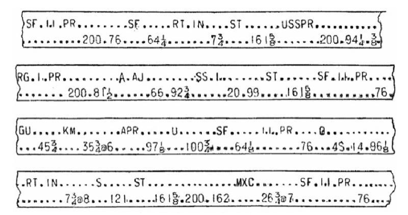
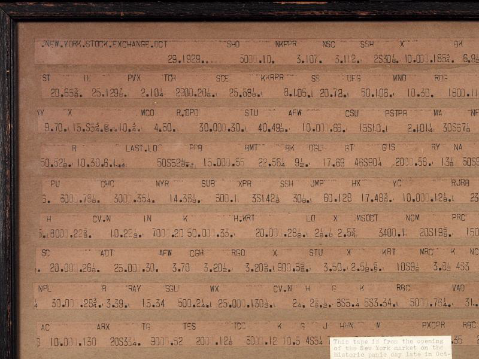
The code was compressed for speed. A few key rules:
GT, US Steel X, Radio Corp R, Westinghouse WX. PR = preferred (not common) stock.S = separator between share count and price (like a dot).SS = an odd lot — fewer than 100 shares.
Early on the tape: 10,000 shares @ 185¾. By the end it reads 2.5½ =
200 shares — but on a day like that, was the price still 185, or had it crashed to 175 or 165?
The tape's compression hid just how fast prices were falling.
What's changed since? Honestly, very little. Our charts are electronic and update tick‑by‑tick, but the information is the same: price, volume, trend, and time. Learn that relationship and the tape — paper or electronic — tells the same story.
Richard Ney gave us a sharp mental model: think of market specialists as merchants. They buy inventory at wholesale (accumulate cheaply from a scared public) and sell at retail (distribute expensively to an excited one) — then clear the shelves and repeat.
From this, Ney posited eight laws. In condensed form:
Richard Ney called consecutive market tops and bottoms through the 1960s–80s — a scourge of the SEC and champion of the small investor.
The takeaway: because big operators must transact to accumulate and distribute, they leave footprints in volume. Stocks, forex, futures — market makers and major banks cannot hide. Volume validates price and exposes manipulation, order flow, supply/demand and sentiment in stark detail.
Charles Dow never published a formal book on trading. He shared his ideas in the early Wall Street Journal. Only after his death in 1902 was his work collected and published — first by his friend and colleague Sam Nelson, and later by William Hamilton.
The 1903 book The ABC of Stock Speculation was the first to use the term "Dow Theory" — a hook on which to hang the great man's ideas.
Three markers: Dow dies in 1902 without ever writing a trading book; the 1903 collection The ABC of Stock Speculation gathers his ideas; and the label "Dow Theory" is coined later to brand them.
The point: "Dow Theory" wasn't a system Dow packaged himself — it's a name others hung on his scattered Wall Street Journal writings after his death. The ideas (volume confirms price, trends have three stages) are what matter, not the branding.
"The key is having more information than the other guy — then analyzing it right and using it rationally."
— Warren Buffett
Uncle Joe runs the only licensed widget distributor in the state. Plain buying and selling is dull and low‑margin — so he games it. His story is the whole market‑maker playbook in miniature:
Spread a "shortage" rumour, let demand build, then ratchet prices higher while the crowd keeps buying.
When the shelves are empty, trigger fear ("a competitor!"), crash prices, and buy everything back cheap.
Accumulation → markup → distribution → markdown. Then: "I wonder if we could do that again?"
The white line is the widget price; read it left to right as Uncle Joe's scheme plays out:
This is exactly what market makers do with shares: accumulate low, mark up, distribute high, mark down. The only place their footprints show is in volume — which is why the volume "quietly drops" at step 3 and spikes on the panic at step 5.
The great irony: outsider insider‑dealing means prison, yet insiders are licensed to do it. Market makers are necessary — they're the market's wholesalers, guaranteeing your order always gets filled. Their edge: they see both sides (supply, demand, inventory) and can set prices.
They sit in the middle with information you'll never have. The one tool that lets us see inside the market is volume — imperfect (large moves can hide in after‑hours reporting), but the best we've got.
Volume shows when a move runs out of steam and when big operators move in/out. Rising price + rising volume = validated up; falling price + rising volume = validated down. Volume is the fuel — if price moves without volume agreeing, an alarm bell rings.
No true volume is reported, so use tick volume as a proxy — studies suggest it's ~90% representative of real activity. Watch a 233‑tick chart around Non‑Farm Payrolls: bars that took minutes suddenly fire out in seconds.
Picture two auctions: an empty provincial saleroom (one bid, price barely moves) vs. a packed city saleroom (price jumps again and again). Activity is volume. From this come three truths:
"…trading and investing is like any other pursuit — the longer you stay at it the more technique you acquire, and anybody who thinks he knows of a short cut that will not involve 'sweat of the brow' is sadly mistaken." — Richard Wyckoff
No free or paid indicator can truly read the price–volume relationship, because it's discretionary and subjective — it won't automate. Mastery takes time (the author spent 6 months studying cash and futures charts side by side), but like the tape readers of old, once learned it's a powerful skill.
We study volume to follow the insiders — assuming they know where the market's heading. So watch for the two climaxes:
Waterfall down on massive volume → wholesalers buying, retail panic‑selling. An opportunity to buy.
Top of a bull run on sustained high volume → wholesalers selling to euphoric retail buyers.
Throughout, "buying" and "selling" always mean from the wholesaler's side — the order flow we always want to follow.
Both charts pair a price line with two tall volume bars at the turning point. The trick is that the label describes what the wholesaler is doing — which is the opposite of the panicking public.
Left — "Buying climax": price waterfalls down while volume explodes. The public is panic‑selling at the lows; the wholesalers are on the other side buying everything cheap. That huge volume at the bottom is your cue that a floor is forming — an opportunity to buy.
Right — "Selling climax": price has run up and volume stays huge at the top. The euphoric public is buying the highs; the wholesalers are quietly selling their inventory into that demand. Heavy volume at the top warns the rally is ending.
Key habit to build: whenever you see a volume spike, ask "what are the professionals doing here?" — because the crowd's emotion (panic or euphoria) is usually pointing the wrong way.
"No price is too low for a bear or too high for a bull."
— Unknown
Price is the counterbalance to volume. As Livermore said, "there is nothing new in Wall Street." The one real change in how we read price was the arrival of candlestick charts in the early 1990s.
Today's fad is "Price Action Trading" (PAT) — analysing price with few or no indicators. But imagine telling Livermore, Dow, Wyckoff and Ney that the new ticker would show price but no volume — they'd be dumbfounded. Price is a leading indicator, but on its own it only shows what already happened; volume completes the picture.
Reading only candles feels clean and modern, but it's like watching that online auction where you see the winning bid yet can't tell if two people or two hundred are bidding. Two identical‑looking candles can mean completely opposite things.
Fix: always pair the candle's shape with its volume bar. The shape gives the direction; the volume tells you whether anyone of size is actually behind it.
Pit traders sensed order flow — fear, greed, the "smell of the market." That flow was volume. When trading went electronic, most failed to transition because they lost that tangible feel. Screen volume is its electronic replacement.
In a physical saleroom you see the crowd, phone bids and where bidders hesitate. Online you see only price — you can't tell how many bidders exist, or if the auctioneer is taking fake "off‑the‑wall" bids. Trading on price alone is that online auction.
In Ney's era markets traded only during a physical session, so the open and close were hugely significant. Then Globex (CME, 1992) made futures trade nearly 24 hours a day.
Because index futures now trade overnight, the cash open is no longer a surprise and old‑style gaps are rare. In a 24‑hour market, one bar's open ≈ the previous bar's close — revealing little. That makes volume even more relevant today.
Each dot marks when a major index future launched on the near‑24‑hour Globex system: the platform itself in 1992, then the S&P 500 e‑mini (ES, 1997), the Nasdaq‑100 (NQ, 1999) and the Dow (YM, 2002).
Why it matters for VPA: before this, markets traded only in a set session, so the open and close were huge, information‑rich events. Now that price trades overnight, today's open is basically yesterday's close — the old open/close/gap signals lost most of their punch. Volume stepped in as the reliable signal, which is exactly why this book leans on it.
Every candle has seven elements: open, high, low, close, the upper and lower wicks, and the spread (the open‑to‑close body). The wicks and spread are the most revealing — especially once validated with volume.
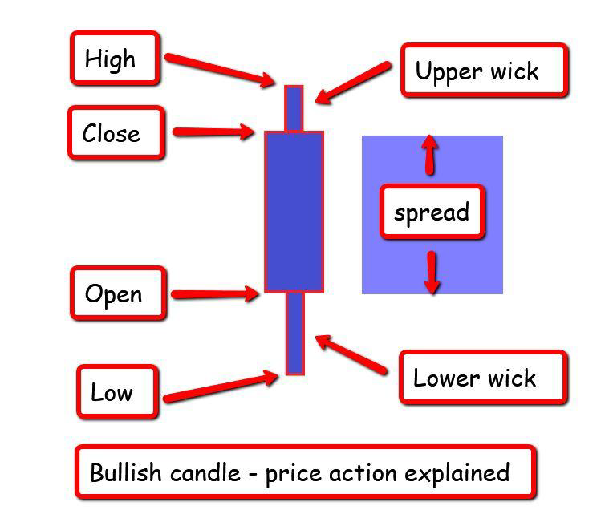
A candlestick summarises one time period (a minute, a day, a week — whatever the chart is set to). The fat middle is the body; the thin lines above and below are the wicks (also called shadows/tails). Four prices define it:
The spread is the height of the body (open‑to‑close) — it measures how decisively price moved. The two wicks show ground that was won then given back.
On a down (bearish) candle it's flipped: the open is at the top of the body and the close at the bottom. Colour just tells you up vs. down; the shape is what carries the message.
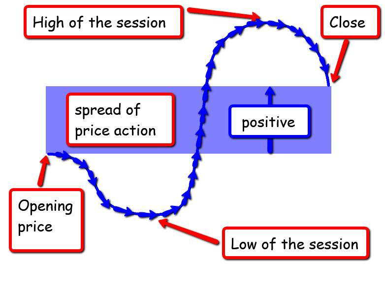
A single candle hides a whole battle. This diagram unrolls that battle as a wavy line: price dips below the open (sellers push), then rallies hard above it (buyers push), before settling at the close. The shaded band is the final body — the net result of all that back‑and‑forth.
Here the buyers win: price ends higher than it started, so the finished candle is a bullish body. The wiggles that poked outside the body become the wicks.
The lesson: the completed candle is what matters, not the messy path it took to get there. Two candles can look identical yet have had wildly different journeys — which is exactly why we then add volume to judge how much real effort was behind the outcome.
Strong sentiment — bullish if close > open, bearish if close < open.
Weak, indecisive sentiment — no strong view either way.
A wick marks a change of sentiment during the session. No wick means sentiment held firm throughout.
Two quick rules of thumb that you'll use constantly:
Spread (body size) = conviction. A tall body means one side dominated all period (strong sentiment). A tiny body means buyers and sellers were evenly matched (weak, undecided).
Wick = rejection. A wick is price that was reached and then rejected. A long upper wick = buyers tried higher but sellers slapped it back (a hint of weakness). A long lower wick = sellers tried lower but buyers bought it up (a hint of strength). No wicks at all = one side was in total control from start to finish.
Price opens, sellers drive it down, then buyers step in near the low, overwhelm the sellers, and push price back up to close at the open. Two lessons: a complete reversal of sentiment within the session, and a bullish close (price was rising into the finish).
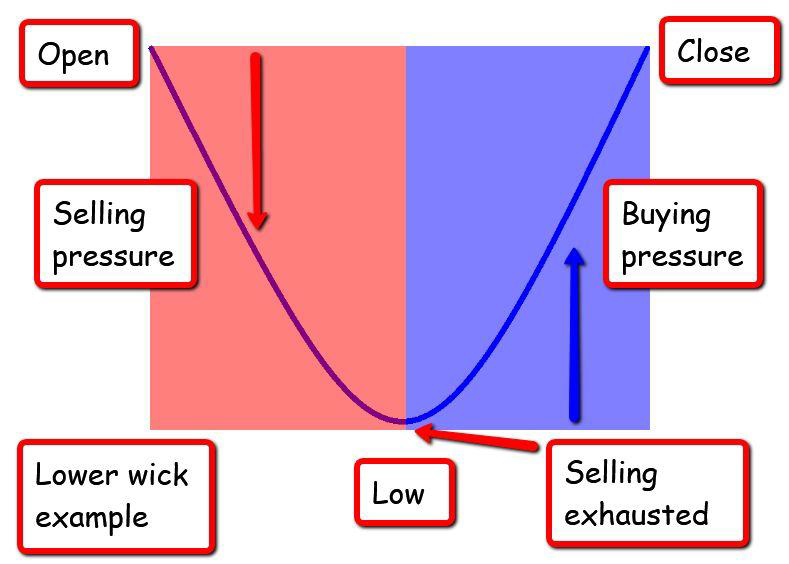
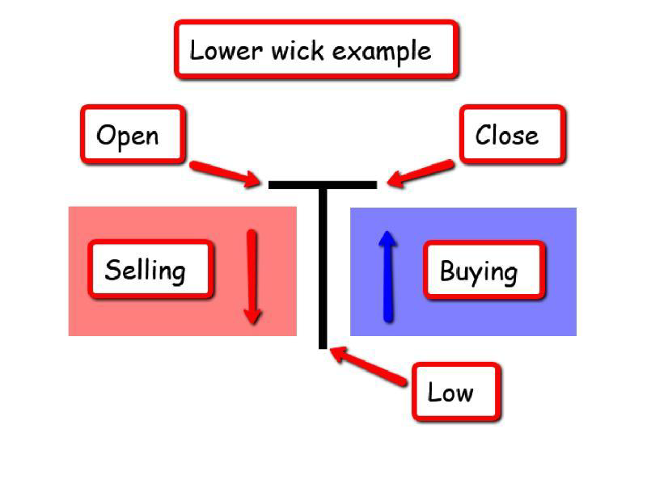
Collapse that journey into one candle and you get Fig 3.14: a small (or non‑existent) body sitting on top of a long lower wick. This is the classic hammer shape.
Why it's powerful: the long lower tail is the market telling you sellers tried to push lower and completely failed. The tiny body isn't boring — it's the fingerprint of a sentiment reversal from bearish to bullish. Now imagine this appears on high volume: that's proof buyers absorbed a flood of selling — a strong signal a bottom may be in.
The mirror image: buyers push price up, run out of steam at the high, then sellers take control and force price back down to close at the open. A complete reversal from bullish to a bearish close.
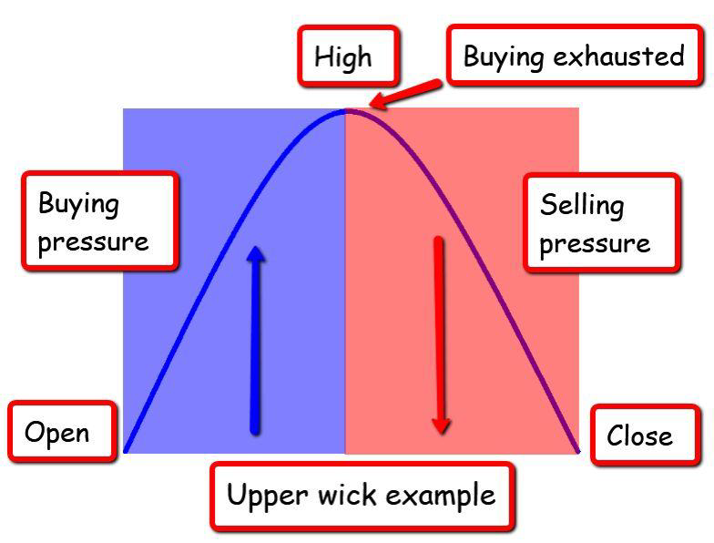
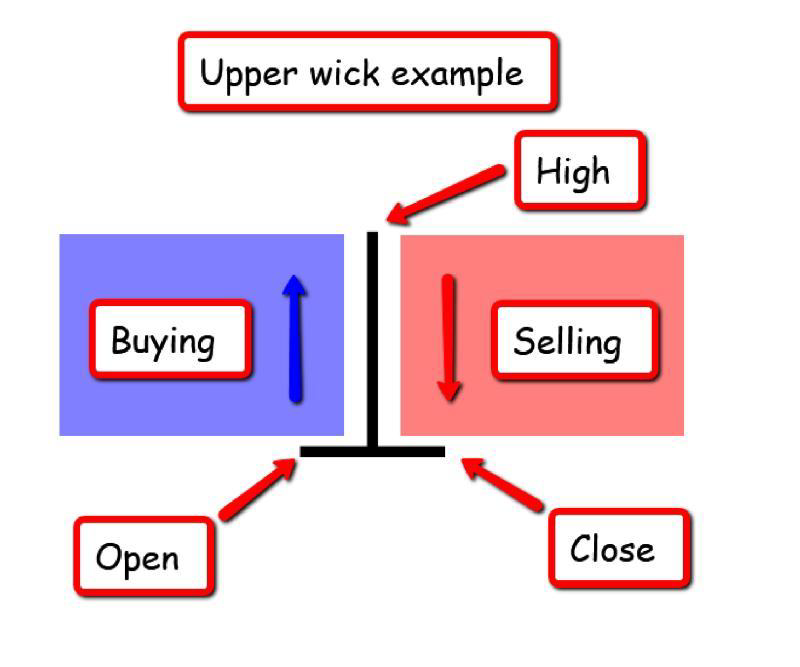
Squeeze that into one candle and you get Fig 3.15: a small body with a long upper wick — the shooting star shape.
Why it matters: the long upper tail shows buyers tried to rally and were rejected. Sentiment flipped from bullish to bearish inside the session. Spot this after a strong run‑up, especially on heavy volume, and it warns the top may be near. Note the caption's point: on a daily or weekly chart this reversal means far more than on a 1‑minute chart, because a full day's worth of participants changed their mind — not just a handful of scalpers.
The same pattern carries far more weight on a daily or weekly chart than on a 1‑ or 5‑minute chart — time matters.
Volume Price Analysis: the relationship between volume and price over the whole completed candle. The big picture.
Volume At Price: where the volume concentrated inside the bar (the volume profile). The detail.
Price action shows the shape of buying and selling — but not its strength or whether it's genuine. That's why PAT tells only half the story: volume completes the picture.
"Wherever learning curves begin in this mercurial business, they never seem to end."
— John Neff
Beginners see one climax or premier candle and jump straight in, then get stopped out when price wobbles for a few more bars. The market is a super‑tanker — it doesn't stop and reverse instantly.
Fix: treat a signal as a warning to get ready, not a trigger. Wait for confirmation (a test, a cluster of signals, a validated breakout) before committing. Patience is principle #2 for a reason.
Everything reduces to Wyckoff's effort‑vs‑result law on a single candle. Compare the spread (result) to the volume (effort). If they match, the move is genuine. If they don't, an alarm bell rings.
A wide up‑candle on low volume, or a tiny candle on huge volume, is the market makers showing their hand.
Every candle falls into one of four boxes. Across the top: how big the body/spread is (the result). Down the side: how big the volume is (the effort). You simply check whether effort and result match:
The two green (diagonal) boxes = effort matches result = carry on. The two red boxes = mismatch = alarm bell. This single grid is the engine behind every signal in the rest of the book.
The same test applies to groups of candles. In a genuine trend, rising price = rising volume — two levels of validation: each candle, and the trend as a whole.
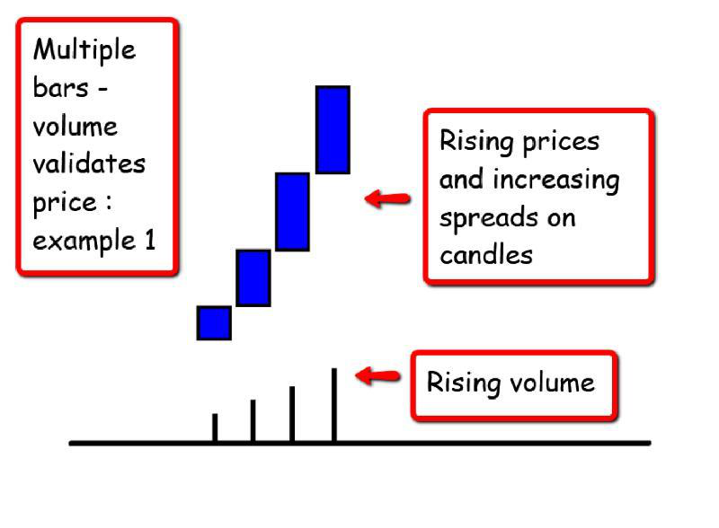
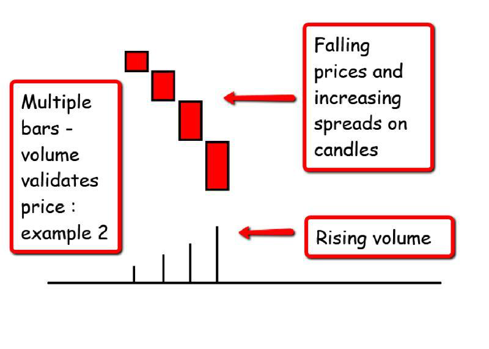
Don't just judge one candle — judge the whole run. In each chart, put a ruler along the tops of the price candles, then a second ruler along the tops of the volume bars underneath.
Fig 4.14 (up‑trend): the price candles step higher, and the volume bars grow taller right alongside them. Both slope the same way, so the up‑trend is validated — real buying is fuelling every leg up.
Fig 4.15 (down‑trend): price steps lower while volume again rises. This surprises beginners, but falling prices need effort too: heavy volume on the way down means genuine, aggressive selling. The down‑trend is just as valid.
Takeaway: a healthy trend — up or down — shows volume expanding in the direction of price. You now have two layers of proof: each individual candle, and the trend as a whole.
Now the warnings. When price keeps trending but volume disagrees, the insiders have stopped participating — they're trapping latecomers while quietly reversing.
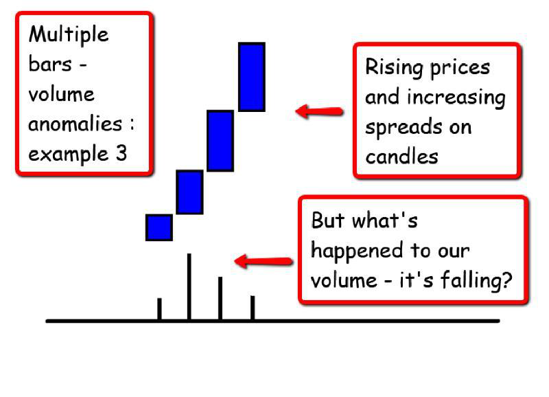
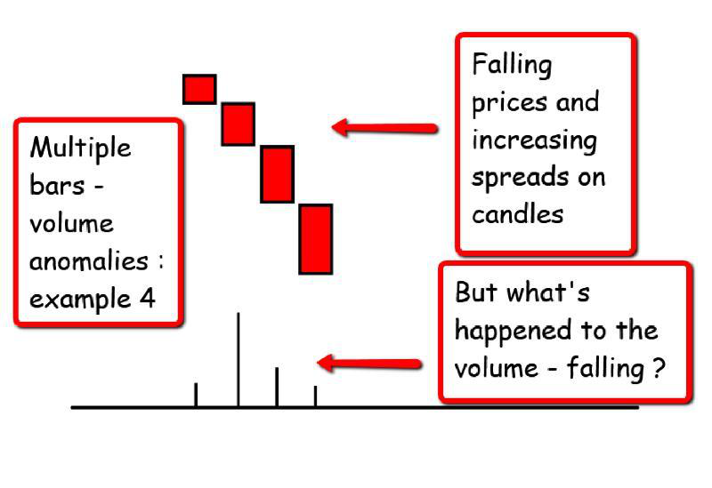
These are the mirror image of the previous two — price and volume now point in opposite directions. That gap between them is the warning.
Fig 4.16 (rising price, falling volume): price keeps making higher highs, but each volume bar is smaller than the last. Fewer and fewer people are buying into the rally — the insiders have already sold out and are just letting latecomers lift it. This "over‑bought" state signals hidden weakness: the up‑move is running on fumes and a reversal is near.
Fig 4.17 (falling price, falling volume): price waterfalls lower, but the selling volume drains away. The panic sellers are exhausted — there's almost no one left to sell. This "over‑sold" state signals hidden strength: insiders are quietly buying and a bottom is forming.
Rule to memorise: when price and volume disagree over several bars, the trend is tiring. The direction that runs out of volume is the direction about to fail.
Like a camera zoom in reverse — start tight, then pull back for the full picture:
Then apply Wyckoff's cause and effect across timeframes. A signal rippling from a 5‑min → 15‑min → 30‑min chart signals a bigger move (the clockwork car: the more you wind it, the further it runs). The longer the "cause" (consolidation), the larger the "effect" (the trend that follows).
"Mistakes are the best teachers. One does not learn from success."
— Mohnish Pabrai
The whole market is the insiders filling and emptying a warehouse, driven by just two emotions in us: fear and greed. Five concepts sit at the heart of VPA: accumulation, distribution, testing, selling climax, buying climax.
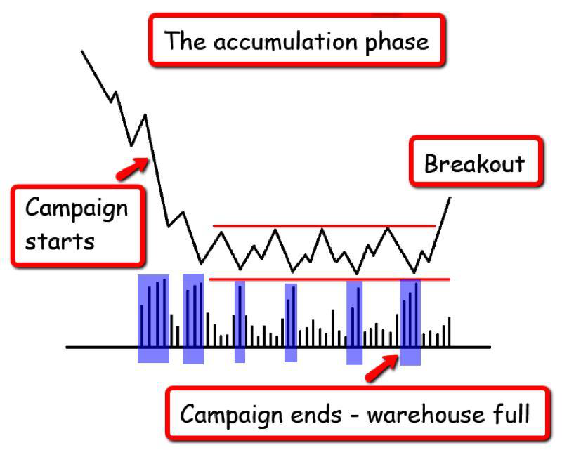
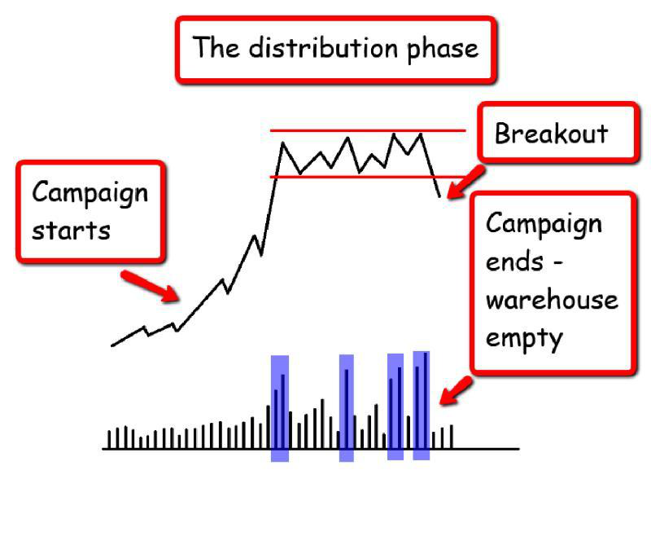
Fear empties the public's hands at the bottom; greed fills them at the top. The cycle repeats endlessly, in every market and timeframe.
Fig 5.10 — Accumulation: look for a long sideways range near the bottom of a chart, riddled with tall volume bars. Price isn't going anywhere, but the heavy volume tells you a lot is changing hands. That's the insiders quietly buying at "wholesale" prices, using bad news to scare the public into selling to them. It looks boring — that's the disguise.
Fig 5.11 — Distribution: the same sideways‑on‑high‑volume picture, but now at the top after a big rise. Price stalls while heavy volume churns — the insiders selling their inventory at "retail" to a greedy public that's piling in on good news.
The tell for both is identical: price stops trending but volume stays high. Lots of activity with no price progress means ownership is being transferred — from the public to insiders (bottom) or insiders to the public (top).
Before committing to a move, insiders test whether old supply (or demand) has been absorbed. They nudge price back into a recent battle zone on a small news item and watch the volume:
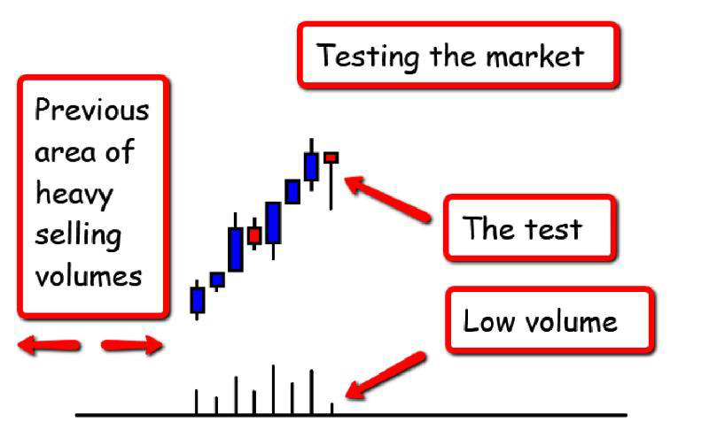
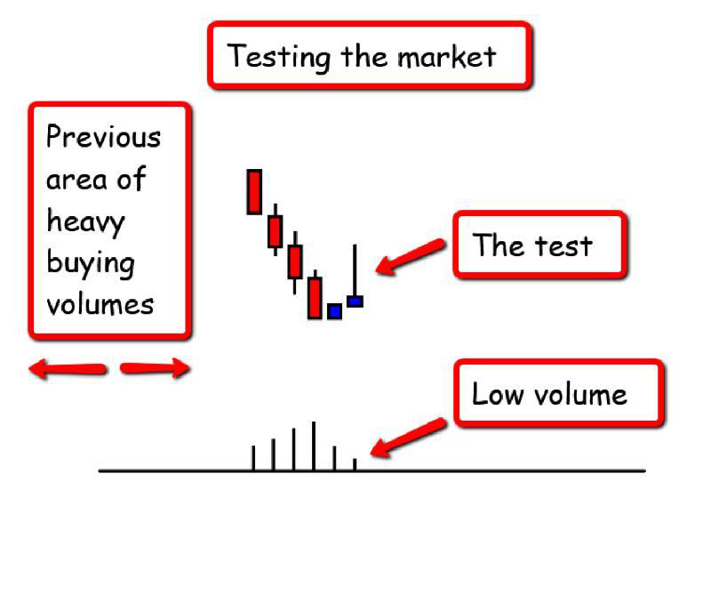
A test is one candle that dips back into a recent battle zone to check if the opposing side has given up. You judge it entirely by the volume on that dip.
The wick shows price went there and came straight back — rejected. Pair that rejection with low volume and it's a green light. If the same dip came on high volume, it would mean the old buyers/sellers are still active, and the move would have to wait.
After a crash, insiders rebuild confidence gently (they can't scare everyone away) — so price climbs in "higher highs and higher lows." Once the warehouse is empty, they crash it to refill cheaply. Think helter‑skelter or snakes and ladders: up the stairs, down the elevator.
The green left half rises in a gentle staircase — small steps up, little pullbacks, higher highs and higher lows. Insiders can't rush this: pushing too fast would spook the public, so they coax confidence in slowly. The red right half drops in one steep plunge, because fear is instant — everyone rushes for the exit at once.
This asymmetry is why the saying goes "up the stairs, down the elevator." Practically: uptrends give you time to get positioned; downtrends punish you fast, so respect topping signals quickly.
These cycles happen in every timeframe — like Russian nesting dolls. An accumulation cycle on a 1‑minute chart sits inside a larger cycle on the 15‑minute, which sits inside the daily, and so on. Watch several timeframes and you'll see them confirm one another — a fast‑chart "microscope" and a slow‑chart "telescope" (Ney).
Note the author's convention: buying/selling is always from the insiders' side. A selling climax is the insiders selling at the top (end of distribution); a buying climax is them buying at the bottom (end of accumulation).
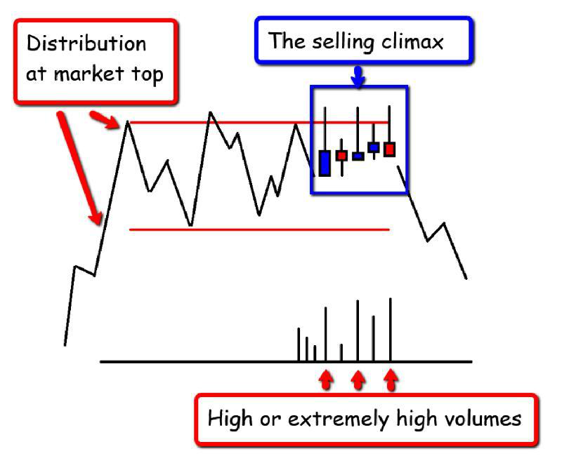
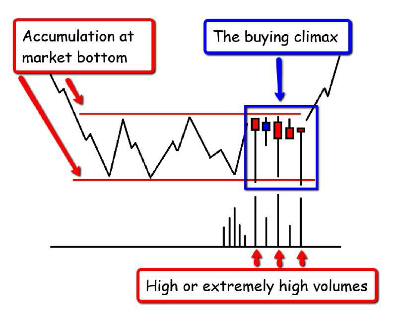
Remember the author's convention: the name describes the insiders' action, not the public's.
Fig 5.16 — Selling climax at a TOP: after a long rise you see a cluster of candles with long upper wicks on very high volume. Price keeps getting pushed up and slapped back down — that's the public buying the highs while insiders dump everything into them. Once the selling is done, price breaks down. Heavy volume + upper wicks at a high = get ready for a fall.
Fig 5.17 — Buying climax at a BOTTOM: after a long fall you see candles with long lower wicks on very high volume. Price is pushed down and bought straight back up — the public panic‑selling while insiders soak it all up. Then price breaks up. Heavy volume + lower wicks at a low = get ready for a rise.
A climax is rarely a single candle — it's a "firework show" of several high‑volume, long‑wick candles clustered together. The more of them, and the bigger the volume, the more significant the turn.
"I never argue with the tape."
— Jesse Livermore
These three are your "wake‑up call." Their price action gives the signal; volume gives the strength. One candle = a hint; two or three together = exponentially stronger.
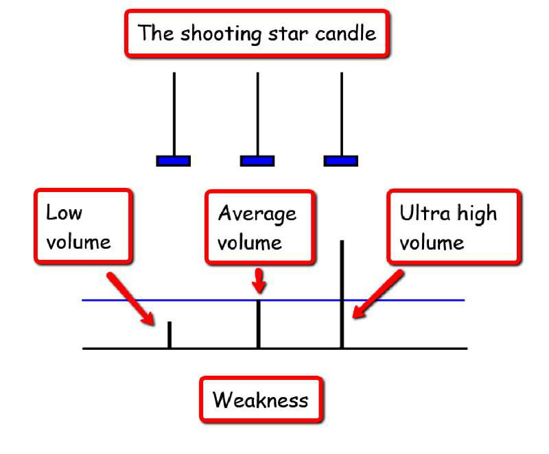
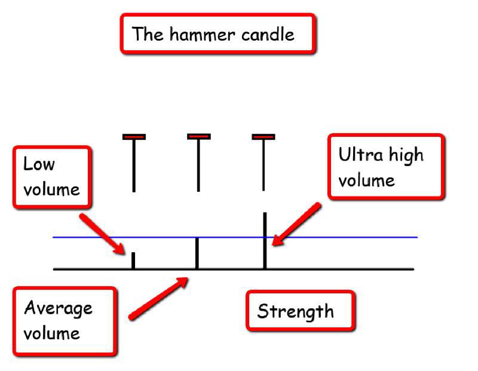
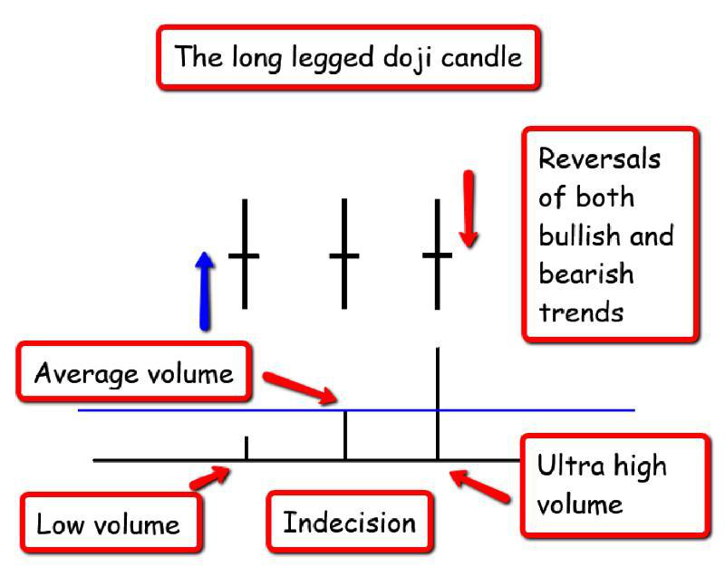
Read the shape first (it gives the direction of the signal), then check the volume bar (it gives the strength). One premier candle is a hint; two or three in a row make the signal exponentially stronger.
The market is a super‑tanker — the brakes take several candles. Watch for the professionals stepping in against the trend:
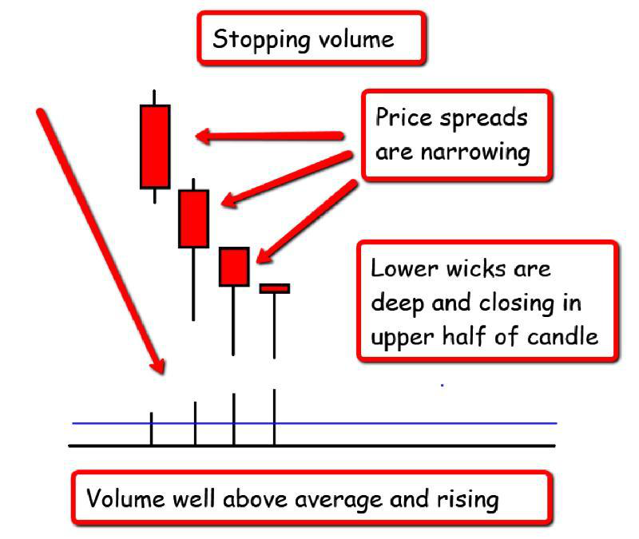
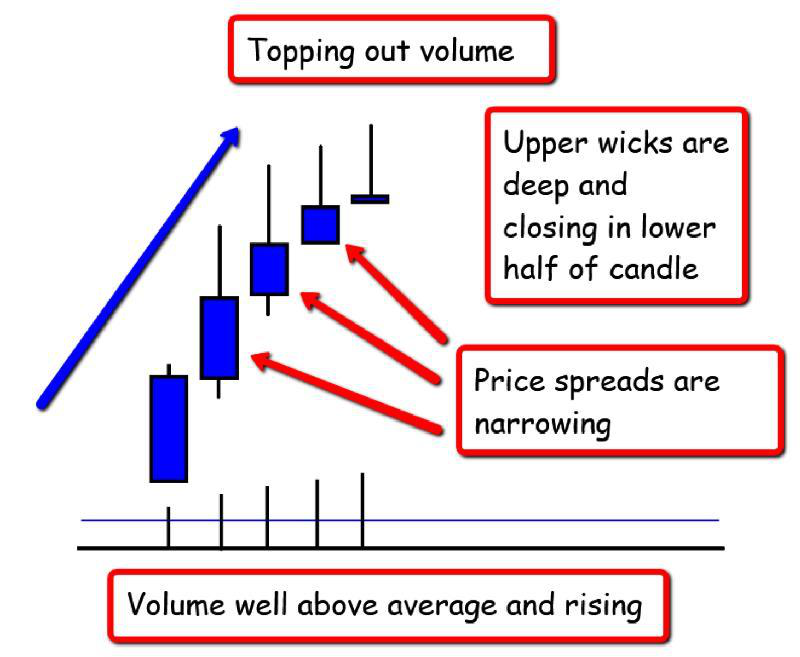
Also note the hanging man (a hammer shape at a top = weakness) and that VPA doesn't just get you in — it keeps you in a trend and tells you when to get out.
These are climaxes spread over several candles — the "brakes" being applied to a moving market.
Fig 6.17 — Stopping volume (a falling market braking): price has been waterfalling down, then you see a run of candles with deep lower wicks on high volume. The insiders are stepping under the falling price and absorbing all the panic selling. Each lower wick is price being caught and lifted. The fall doesn't reverse instantly — it grinds to a halt over a few bars — then turns up. This is strength.
Fig 6.18 — Topping‑out volume (a rising market braking): the mirror. After a rise, candles arc over with deep upper wicks on high volume — insiders selling into the crowd's greed. Price rolls over into a rounded top. This is weakness.
Because the market is a "super‑tanker," it can't stop on a dime. Don't expect a single reversal candle — look for a cluster of high‑volume, deep‑wick candles that show the professionals leaning against the trend for several bars.
"Money and markets may never forget, but surely people do."
— Kenneth L. Fisher
If volume and price are the foundations, support & resistance are the walls, floors and ceilings. Markets move up, down, or sideways — and they're sideways ~70% of the time. That congestion builds an invisible floor of support and ceiling of resistance that price bounces between (like ping‑pong).
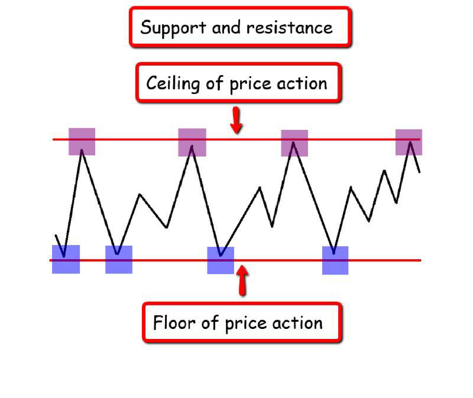
Draw a horizontal line across the lows where price keeps bouncing up — that's support (the floor). Draw another across the highs where price keeps getting knocked back — that's resistance (the ceiling). Price ping‑pongs between the two.
Markets are in this sideways state roughly 70% of the time, so recognising these bands is more useful day‑to‑day than chasing trends. Each touch of the floor is a potential buy, each touch of the ceiling a potential sell — until one of them finally breaks.
The levels aren't magic — they're the extremes of fear and greed. Buyers trapped at the top of a wave sell out (relieved) the next time price returns; new buyers enter at the floor. This constant churn packs the zone with weak and strong positions, which become future barriers.
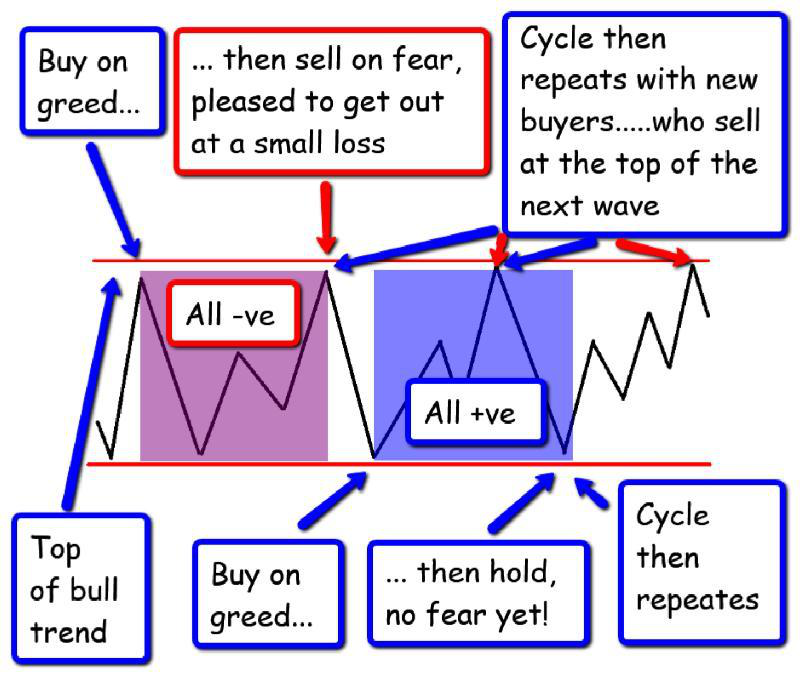
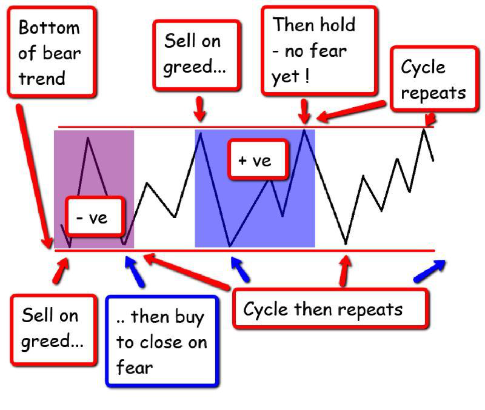
Support and resistance aren't magic numbers — they're where crowds of traders got trapped by emotion, and those trapped positions become future barriers.
Fig 7.11 (ceiling at a top): greedy latecomers buy near the high, fearing they'll miss out. Price then falls and leaves them underwater. The next time price climbs back to that level, they sell just to break even — their relief‑selling caps the price and forms resistance.
Fig 7.12 (floor at a bottom): the same in reverse. Panicked sellers dump at the low; when price returns there, fresh buyers step in and the memory of that level creates support.
This is why old highs and lows keep "working" — the barrier is really a memory of trapped money, not a line on the chart.
The hard part is recognising congestion as it happens. The answer is the isolated pivot — a three‑candle reversal. A pivot high (middle candle has the higher high) marks the ceiling; a pivot low (middle candle has the lower low) marks the floor.
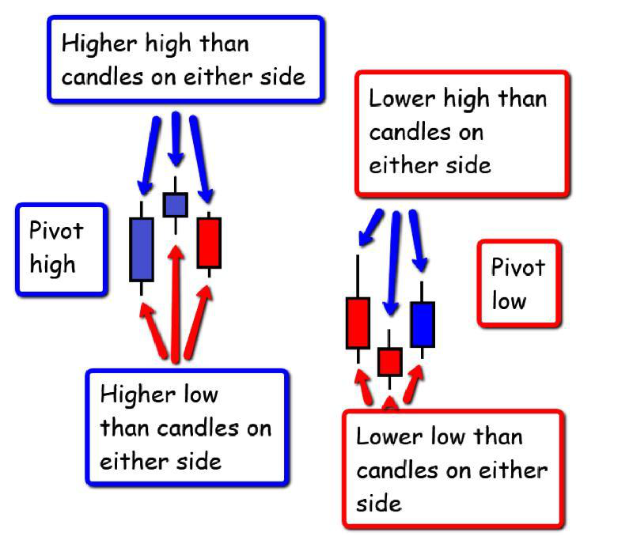
A pivot is the simplest reversal pattern — just three candles:
Why it's useful: you can spot a pivot the moment the third candle closes — you don't have to wait for a whole trend to form. The first pivot high and first pivot low give you the top and bottom lines of a congestion zone in real time.
Congestion zones are densely packed, so escaping one needs real volume. A breakout with "clear water" beyond the line on strong volume is genuine. A breakout on low volume is a classic "fake‑out" — the insiders trapping traders on the wrong side.
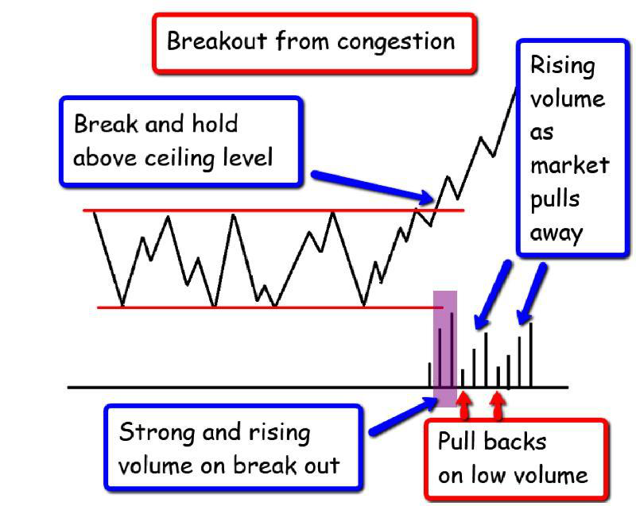
Remember: the lines are elastic rubber bands, not rods of steel — and the longer the congestion (cause), the bigger the breakout move (effect).
The volume check is everything. A breakout on low volume is the classic "fake‑out" — the insiders nudge price just past the line to trigger buy‑stops, then reverse and trap those buyers. No volume = no conviction = don't trust it. And because a congestion zone is packed tight, only real effort can escape it — which is why the longer the squeeze (cause), the bigger the eventual move (effect).
Two traps here. First, chasing every break of a line — most low‑volume breaks are fake‑outs designed to trap you. Second, treating support/resistance as a razor‑thin price: the lines are elastic rubber bands, not rods of steel, so price often overshoots slightly before respecting a level.
Fix: only trade breakouts confirmed by strong volume with clear water beyond the line, and think of S/R as zones, not exact numbers.
"The loss was not bad luck. It was bad analysis."
— David Einhorn
"Let the trend be your friend" sounds wise but is nearly useless live. Traditional trend lines need three higher highs and higher lows before you can draw them — by which point the trend is already near its climax, and you'd be buying just as the insiders sell.
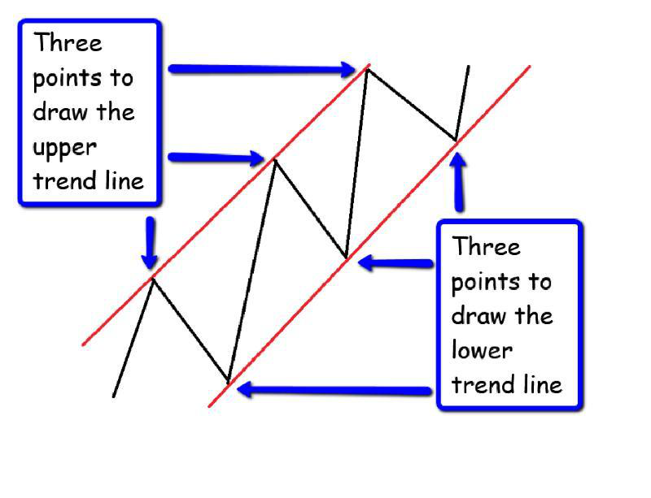
The classic rule says: connect the rising lows with a straight line and you've got an uptrend to buy. To draw that line convincingly you need three higher lows (and higher highs). Count them on the chart.
Here's the problem: by the time three clean higher highs and higher lows exist, the trend is already mature — often near the distribution stage. So the "obvious" entry point is exactly when the insiders are selling to you. The textbook method makes you fashionably late. Chapter 8's fix (dynamic pivot‑based lines) gets you in far earlier.
Dow's own three trend stages — accumulation, trend‑following, distribution — are exactly the insiders' warehouse cycle.
The fix: build trend lines dynamically from a volume‑validated breakout, using the same isolated pivots from Chapter 7 as "way points." Each new pivot high above the last, and pivot low above the last, confirms the trend — so you're in near the start, not the end.
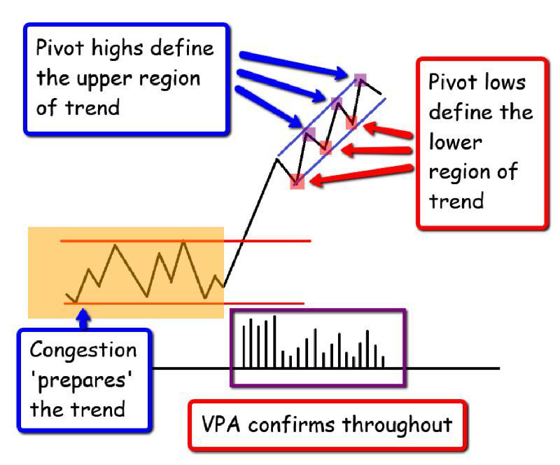
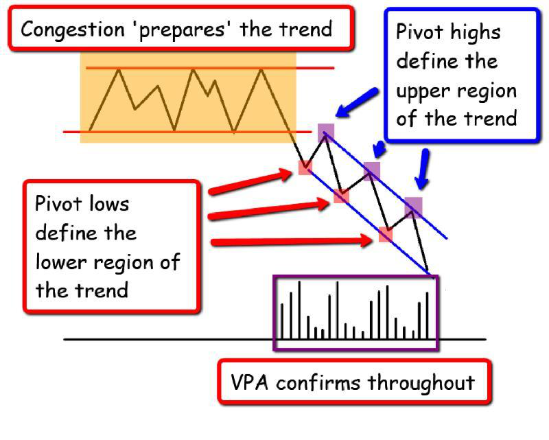
When a pivot fails to make a new extreme, the trend is pausing or reversing — exit or re‑assess.
Instead of waiting for the whole trend, you use the isolated pivots from Chapter 7 as stepping‑stones and draw the trend line while it forms.
Fig 8.14 (bullish): after a volume‑validated breakout, mark each new pivot low. As long as each pivot low is higher than the last (and pivot highs keep rising too), the uptrend is intact and you're riding it from near the start.
Fig 8.15 (bearish): the mirror — connect lower pivot highs. Each new lower pivot confirms the downtrend continues.
Your exit signal is built in: the moment a pivot fails to make a new extreme (a pivot low that's lower in an uptrend, or highs that stop rising), momentum is gone — time to take profit or re‑assess. This keeps you in for the meat of the move and out before the reversal.
"In a bull market it is better to always work on the bull side; in a bear market, on the bear side."
— Charles Dow
VPA reads volume over time (the bars along the bottom). VAP reads volume at each price level — a horizontal histogram down the side of the chart. Think of it as taking one volume bar and cutting it open to see where the trading actually happened.
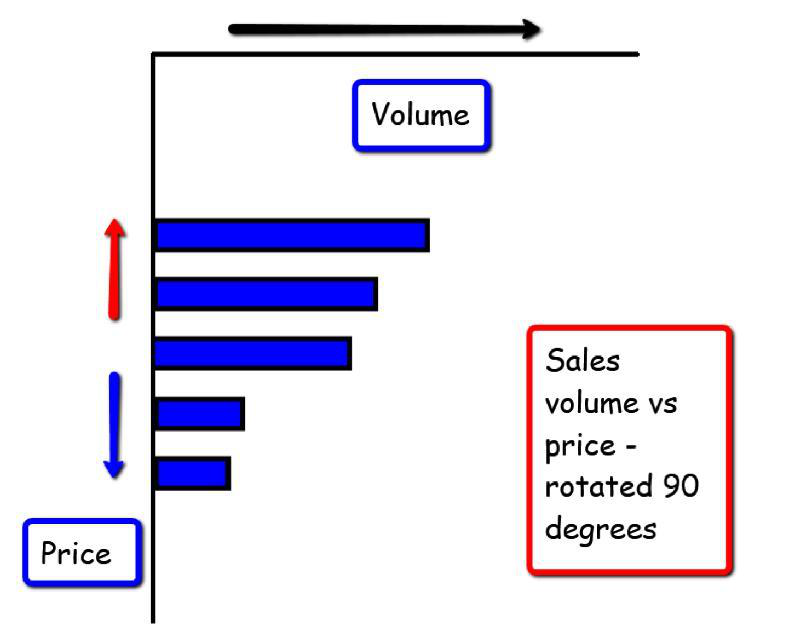
Normal volume bars run along the bottom and answer "how much traded in each time period?" VAP flips the question 90°: horizontal bars run down the side and answer "how much traded at each price level?" A long horizontal bar means price spent a lot of activity there; a short one means price passed through quickly.
Picture taking a single tall volume bar and slicing it into horizontal layers to see which price levels held the most trading. Those fat layers are where the crowd is heavily committed — which is exactly where support and resistance live.
Heavy volume low in a range = buying; heavy volume high = selling. The big VAP bars mark the strongest support and resistance — the invisible barriers, now painted on the chart.
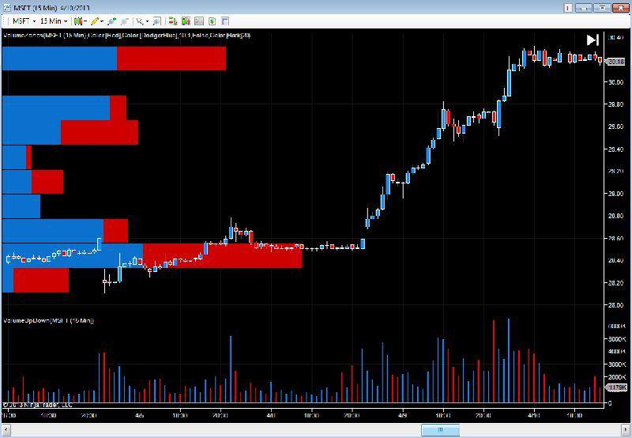
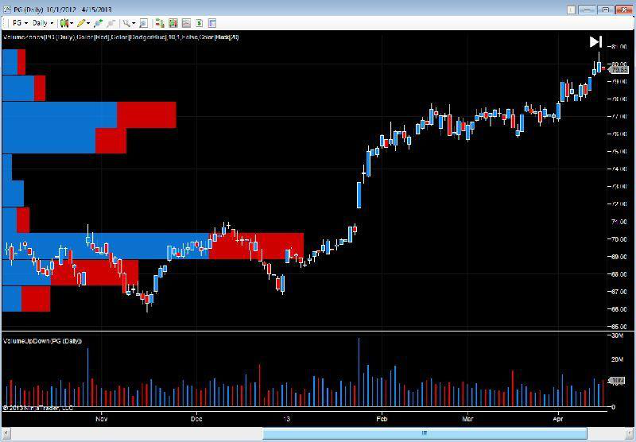
VAP supports VPA — never replaces it. Use VAP to spot the zones, then confirm with classic VPA.
On both charts the VAP histogram sticks out horizontally from the price action. The rule is simple: the longer the bar, the stronger the barrier at that price.
Fig 9.12 (MSFT 15‑min): the tallest VAP bars mark the heaviest congestion — the strongest support/resistance. The book flags a warning: when a recent zone has already stacked up as much volume as an older zone three times longer, that's a lot of trapped supply building fast — a weak, heavy top.
Fig 9.15 (P&G daily): one extreme VAP bar towers over the rest — a rock‑solid support platform where huge volume changed hands. Above it, a lighter zone offers much weaker support, so price can move through it more easily.
Use VAP to find the important price levels, then switch back to normal VPA (candles + volume‑over‑time) to judge what's happening at those levels. VAP shows you where the walls are; VPA tells you whether they're about to break.
"Two key factors: correct action and patience. These you must supply yourself."
— Charles Brandes
Reading a chart is a running commentary in your head — candle by candle, asking "validation or anomaly?" The examples below are stocks, ETFs, forex and futures, on timeframes from tick to weekly. The analysis is identical in every case.
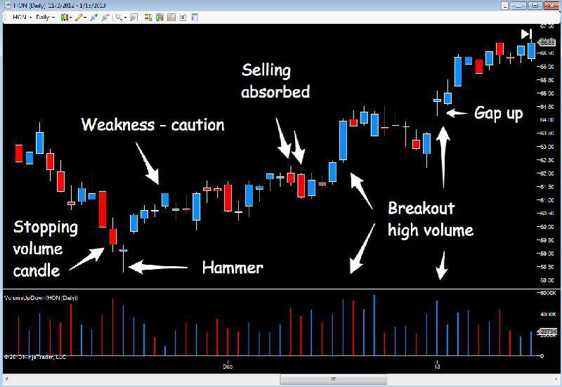
This is everything from earlier chapters strung together into one running commentary. Left to right:
No single candle told the whole story — the sequence did. This candle‑by‑candle narration ("is this validation or anomaly?") is exactly how you should read any chart.
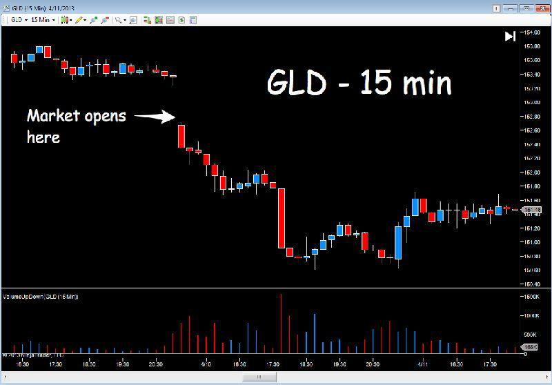
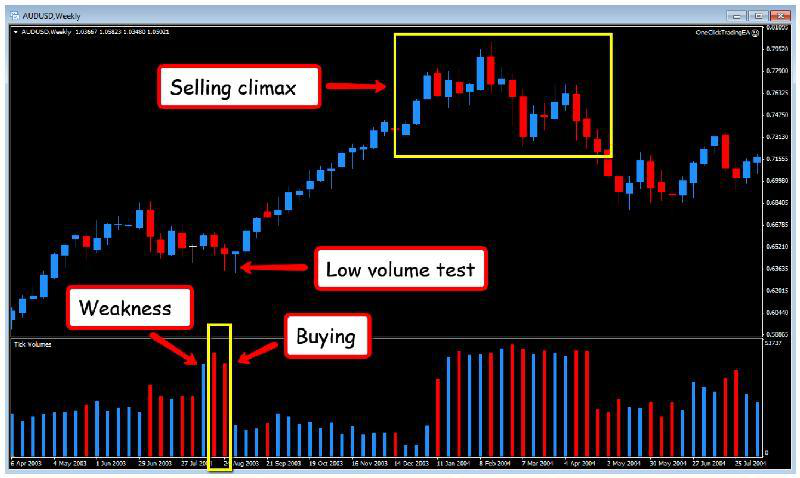
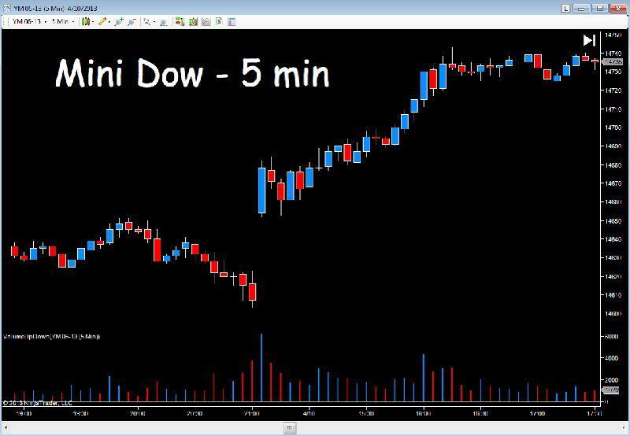
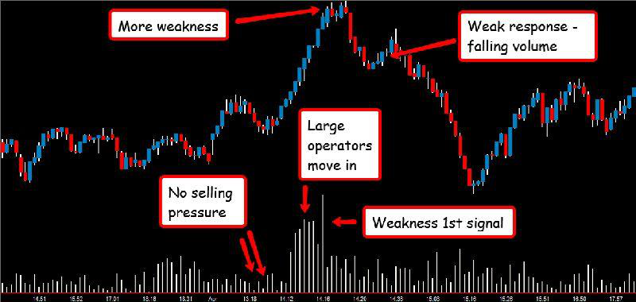
Beware the trap up move: a wide up candle on low volume at the open, set up the night before to lure eager traders in.
These four charts prove VPA is universal — the market and timeframe change, the reading doesn't:
The recurring warning: a wide up candle on low volume, especially at the open, is a trap set the night before to lure eager buyers. Always check the volume before trusting a move.
Zoom right out and the anomalies leap off the page. Your eye is drawn to the extreme volume — that's where the insiders acted.
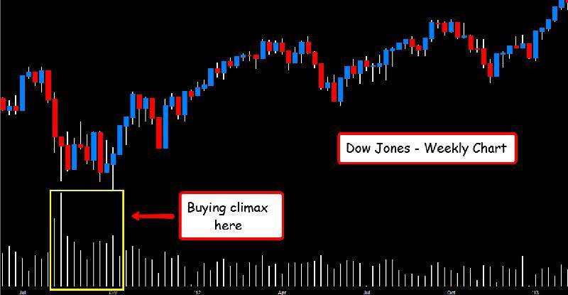
On a long weekly chart your eye is instantly pulled to the tallest volume bars — and that's precisely where the insiders were most active. Here the accumulation zone (a block of heavy volume near a low) jumps out as obvious buying.
Just as important is what's missing: there's no selling climax (no heavy‑volume topping) yet, which tells you the insiders haven't sold — so the trend is still intact. Big players must trade in size, and size shows up as volume, so on a wide view their footprints are impossible to hide.
"The market does not run on chance or luck. Like the battlefield, it runs on probabilities and odds."
— David Dreman
Use three charts: a slower benchmark (the dominant trend), your primary trading chart in the middle, and a faster one for fine detail. A signal ripples from fast → primary → slow like ripples in a pond. Trading with the dominant trend is lower‑risk; against it is counter‑trend (higher risk, shorter hold).
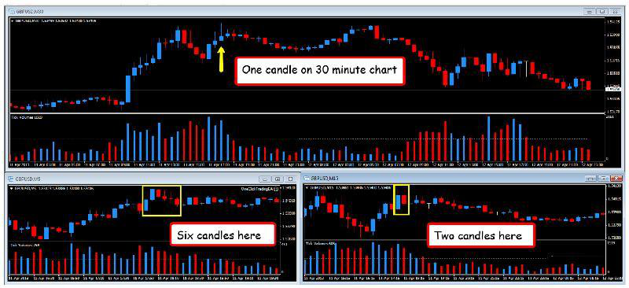
The same price action looks different depending on the chart's speed. One clean shooting star on the 30‑min chart is the same price move as 2 candles on the 15‑min and 6 candles on the 5‑min — but on the fast chart it's messy and easy to miss, while on the slow chart it's a single obvious warning.
So use three charts together: a slow one to see the dominant trend and the clean signals, your primary chart to trade from, and a fast one for precise entries. A real signal will ripple across all three. Trading with the slow‑chart trend is lower risk; trading against it is counter‑trend — higher risk and hold it for less time.
A perfect buy signal on your 5‑minute chart is a losing trade if the daily chart is in a strong downtrend — you're fighting the dominant flow. Small‑chart signals against the big‑chart trend fail far more often.
Fix: always check the slower benchmark chart first. Only take counter‑trend trades knowingly, small, and briefly — and prefer signals that line up across all three timeframes.
These patterns form in congestion and, once broken on volume, spawn trends or reversals. Remember cause & effect — the longer the pattern, the bigger the move.
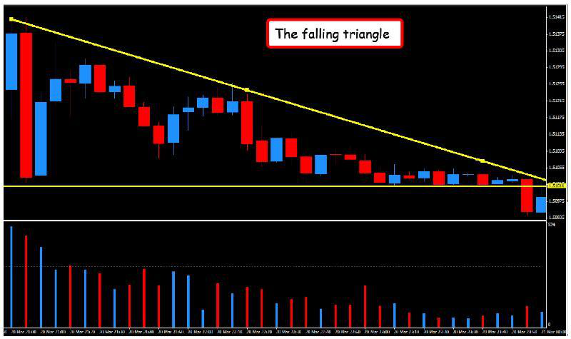
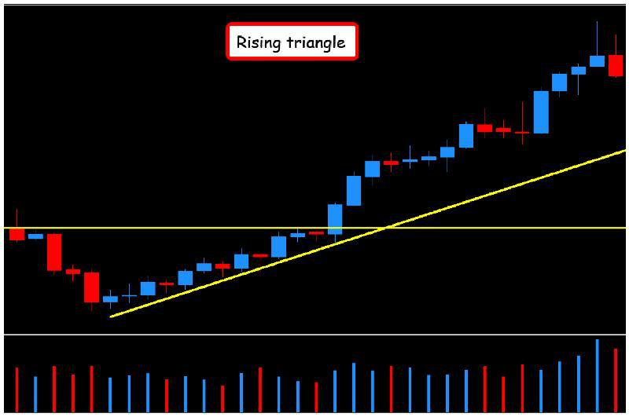
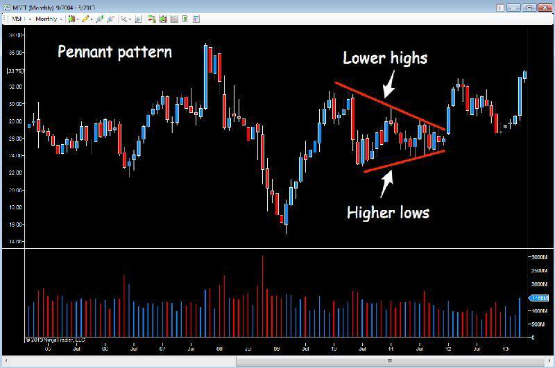
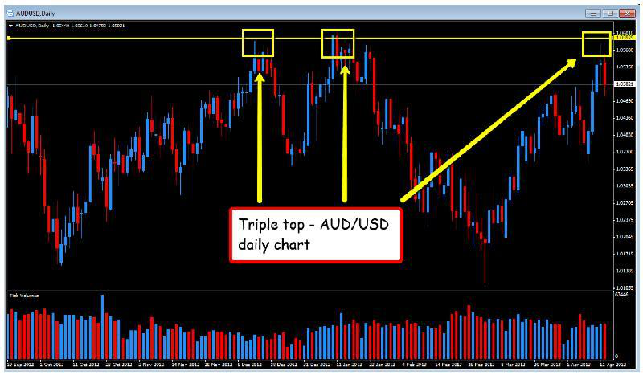
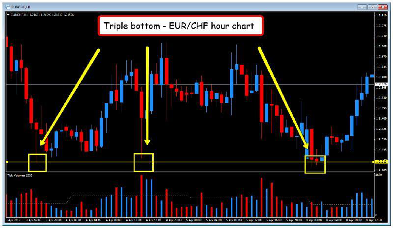
In every case the pattern only "fires" when price breaks out on strong volume — a low‑volume break is a fake‑out. And remember cause & effect: the longer the pattern took to form, the bigger the move that follows.
"My biggest winnings were not in dollars but in the intangibles: I had been right… and followed a clear‑cut plan."
— Jesse Livermore
The author closes with emerging techniques she hadn't traded herself, but wanted to flag:
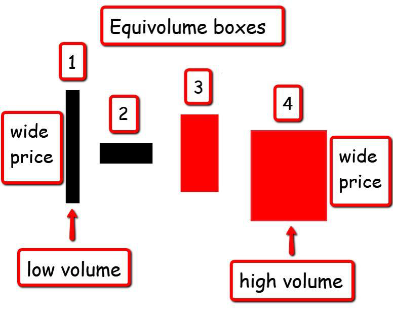
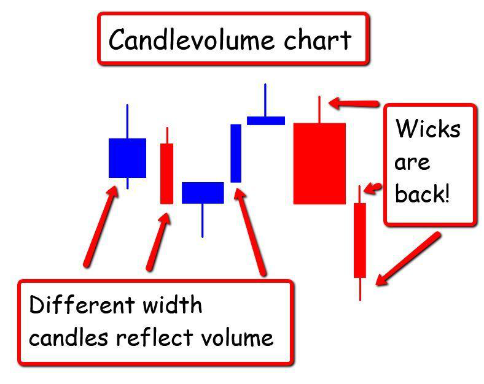
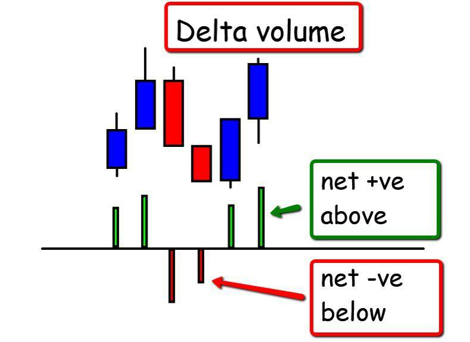
The author flags these as promising but secondary. The closing message stands: plain price + volume is still the core method — these are extra lenses, not replacements. It remains an art, but "there is no hiding place" for the insiders.
The closing message: volume and price together are the only indicators that truly reveal market sentiment and the insiders' activity. No software can do it for you — it's an art that takes patience and practice. But once learned, "there is no hiding place."
Read each scenario, decide your answer, then click to reveal. If you can breeze through these, you've understood the book.